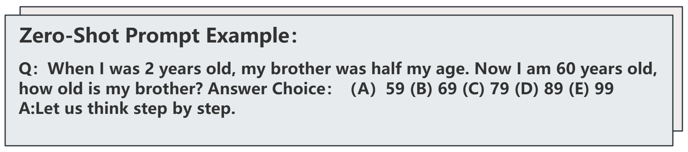

LLM基座CoT推理性能优化研究工作说明
研究背景与核心现象发现
1.1 研究切入点：思维链方法的应用与观察
本研究以思维链（Chain of Thought, CoT）及表格化思维链（Tab-CoT）等CoT变式的prompt工程方法为核心工具，针对大语言模型（LLM）基座在不同类型的benchmark中的推理性能展开系统性探究。旨在系统性探究大语言模型基座在不同类型测试基准中的推理性能边界。通过在多类任务场景下部署标准化思维链提示，对比分析大语言模型在不同领域的表现差异，从而识别当前模型在特定任务类型上的性能瓶颈，并以此为基础探索优化模型综合效能的可行路径。
1.2 核心现象：LLM基座在选择题基准上的性能短板
基于思维链与表格化思维链方法的广泛测试与深入分析，本研究确立了一项关键实证发现：大语言模型基座在以AQUA为代表的数学推理类选择题基准上，呈现出显著的性能短板。相较于在非选择题或通用知识类基准上的表现，模型在处理此类需要严密逻辑推导的结构化选择题时，准确率与推理稳定性均存在明显下滑。具体性能差异趋势如图1所示。
研究数据设计与准备
2.1 基准数据集选用原则
为确保实证分析的精准性并有效支撑后续的优化研究，数据集的选用遵循任务类型互补、核心能力全覆盖以及数据质量可靠三大原则。本研究重点构建了包含三类代表性数据集的对比测试体系。
- 选用涵盖人文、社科、理工及技术等五十七个学科领域的英文综合能力测试集MMLU，用以反映模型通用的知识储备与推理水平，并将其作为非短板基准的核心参照对象；
- 引入以中国高考真题为核心的中文综合能力测试集GAOKAO-BENCH，该数据集包含数学、语文及理综文综等多元科目，题目类型覆盖选择、填空及解答，旨在验证模型在复杂真实应用场景下的性能表现；
- 聚焦于高度依赖中间推理过程的数学推理选择题的AQUA数据集，该数据集包含从小学至高中跨度难度的数学问题，要求模型在四个干扰选项与一个正确选项中通过多步计算与逻辑推理锁定答案，是本研究重点关注并试图突破的性能短板基准。
2.2 统一数据格式规范
为消除异构数据源带来的格式噪声干扰，确保不同基准测试间的对比一致性，本研究以AQUA-RAT数据集的结构特征为蓝本，制定了严格的数据规范化范式。该范式将所有实验数据重构为题干question、选项集options与正确答案correct三个核心维度组成的的dict集合(如下），并保存于json文件中。
1 | { |
实验设计与现象验证
3.1 实验方案设计
实验选取GPT-4o、Qwen-2.5-7b以及Deepseek-v3等三类主流大语言模型基座作为研究对象，涵盖了不同技术路线与参数规模，以保证实验结论的普适性。实验核心变量设定为不同领域的选择题任务，同时严格控制模型参数规模、提示词格式等干扰变量。

1 | # format code |
其中，提示词统一采用“题干结合分步推理引导语”的标准化格式。评估体系采用准确率衡量客观题表现，采用F1得分评估主观题质量，并引入推理链完整性与逻辑一致性作为辅助指标，通过人工评分与自动匹配相结合的方式进行综合测度。
3.2 实验实施与CoT分析文本获取
数据预处理：将统一格式后的三类数据集按8:1:1比例划分为训练集（仅用于模型熟悉数据格式，不进行参数更新）、验证集（用于调整prompt细节）、测试集（用于最终性能评估）。
模型测试：将测试集数据按统一prompt格式输入各LLM基座，启用CoT推理模式，记录模型输出结果（含最终答案与推理过程文本）。每个模型在每类数据集上的测试次数不少于3次，取平均值作为最终结果。
CoT分析文本整理：提取模型输出的推理过程文本，结合“推理链完整性”“逻辑一致性”指标进行标注，形成包含“模型输出推理链”“指标评分”“问题总结”的CoT分析文本集。
3.3 现象验证与原因初步分析
基于实验数据与CoT分析文本，完成核心现象的验证与原因拆解：
现象验证结果：所有测试模型均呈现“在AQUA数据集上性能弱于MMLU、GAOKAO-BENCH（选择题部分）”的特征，其中Llama 3 70B在AQUA上的准确率为42%，在MMLU上为68%，差距达26%；GPT-4o在AQUA上的准确率为71%，在MMLU上为89%，差距为18%，进一步确认现象的普遍性。
原因初步分析：通过CoT分析文本发现，LLM基座在AQUA任务中存在两大核心问题：一是“推理与对齐冲突”，即多步推理过程中易出现逻辑跳跃或计算错误，导致最终答案与推理过程脱节；二是“短板放大效应”，数学推理的精准性要求较高，某一步推理失误会直接导致最终答案错误，而模型在常识类任务中可通过知识补全掩盖部分推理缺陷。